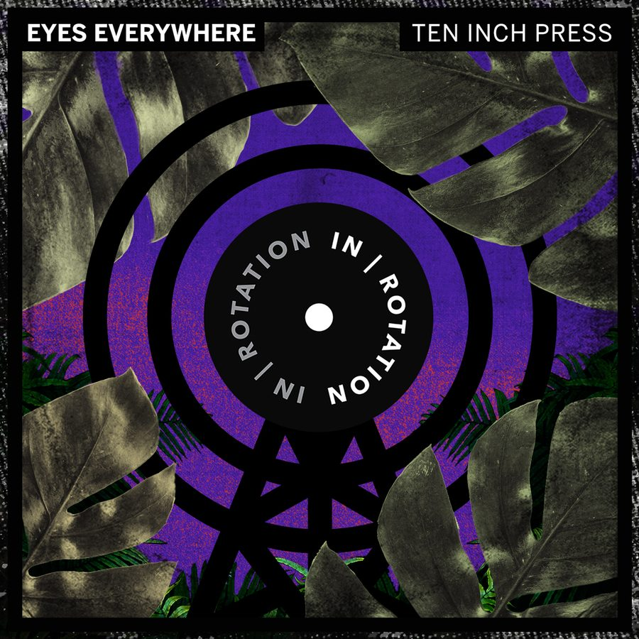

Eyes Everywhere Drops D&B-Sampled Tech House Groove “Ten-Inch Press” on IN / ROTATION


Eyes Everywhere is the brainchild of Brian and Kyle, both born and raised in the city of Buffalo, NY, and united by a musical love of everything from “crust punk to trance.” Bringing this versatility to bear in their music, it gradually condensed nicely over the years into a smooth tech house sound that has been showcased on labels like Club Sweat, Fool’s Gold, and Toolroom. With their latest D&B-inspired groover, “Ten-Inch Press,” the duo are making their debut appearance on our own IN / ROTATION imprint.
Regulars at staple parties like HARD Summer, the pair say the season has been relatively lax on the shows so far, due to some major life events. While Brian got married and moved across the state, Kyle became a father for the first time. “It’s cool, though, because these are the sort of real-life experiences you can draw upon for the next wave of music,” Eyes Everywhere told us as we grabbed them for a chat about their new IN / ROTATION release. Find out what they had to say below, after diving face-first into their new single up top.
Buy Eyes Everywhere’s “Ten-Inch Press” here.
How is 2018 shaping up for you so far?
The year was pretty wild to start. We got out West a few times; it’s always great to beat the Northeast winters. Then, we had some East Coast dates in the spring. And then out to play a festival in Croatia, so we did a swing through Europe before making it out to the after-party circuit at Movement in Detroit.
You’ve spoken of how your sound is “rooted in everything from crust punk to trance.” For those not familiar, tell us a bit about the Eyes Everywhere sound.
People in this scene often get overly focused on some microcosm of the microcosm that is dance music. If you don’t stop and flip on a random Spotify station once in a while, you might miss something. I got into this through Paul van Dyk and Marcus Schulz—the sort of darker, more emotional side of trance.
We both came up through punk and hardcore, though—bands like Leftover Crack, Every Time I Die, and Bad Brains. Music is always about more than just sound to us. It can be about the community and, more often than not, politics. Our sound is often more theory-based fused with cacophonic dissonance—at least, that’s what we aim for.
You’ve played gigs all over the US, though you were born and raised in Buffalo, New York.
Brian just moved to Albany—New York’s capital, near the Adirondack Mountains—with his wife, while Kyle is in Buffalo. Thank God for Splice. Buffalo is not a bad hub for travel, since so many Toronto people fly out of there. We could easily get to larger cities. Albany is only a couple hours from NYC, Boston and Montreal, so travel is pretty easy there.
As far as touring, we’ve built more of a grassroots “fan base.” It feels weird to call it a fan base, though, because we have always worked to make friends everywhere we go—as opposed to fans. We try to always meet new people and not just hide out with other DJs. If we get a big booking in say, L.A., we hit up friends and swing through several cities at once to save on flights and such. We had to crash on some couches along the way, but now, we have good friends everywhere.
So far, you’ve got releases behind you on Club Sweat and Fool’s Gold. Not a bad start.
Fool’s Gold was actually the first label to ever put out anything of ours, along with Worthy’s label, Anabatic. The Fool’s Gold signing came out of us sending Nick Catchdubs tracks for years and years, and him finally signing one. I didn’t think he was even looking at them anymore, to be really honest. [We] just kept sending him tunes and never gave up. From there, we were doing a sort of breaky sound for a bit. Eventually, we became super inspired by the UK tech sound and started putting out some groovier stuff, including our collabs with Golf Clap. That got us our first Pete Tong Essential Tune with “Bout That.” From there, we have basically been consistently releasing stuff with Toolroom, as well as Psycho Disco, and now IN / ROTATION.
You’ve delivered a fairly slamming tech house track for your debut on IN / ROTATION. How did you get connected with the label?
Been looking to work with the Insomniac team for a while, so it’s awesome to finally come on board with IN / ROTATION—loving everything the label is pushing. All the credit there has to go to our manager, Mike Fazio. We had been sending him tunes he thought might be a fit. After a few tries, we finally found one! Shout out the absolute don, “Jacuzzi Mike.”
“Ten-Inch Press” has an interesting vocal behind it. What’s the story behind the track?
The original vocal was actually a sample from an old jungle mix from 1992. Kyle was listening to the mix one day and decided to grab a little vocal snippet. That mix has MC GQ on the mic, and he’s just keeping the energy going, as Goldie is absolutely smashing it.
We had some fears about getting in trouble for the sample, so we actually reached out to a UK artist to re-record the sample for us. We are massive fans of old UK rave culture, garage, and drum & bass. It was awesome to bring some of that flavor as North American artists. Seems like all the people on the tech house side who we vibe with are D&B fans, as well. Gun fingers up for all of you.
What’s up next for Eyes Everywhere?
Writing an album. Stay tuned!
Follow Eyes Everywhere on Facebook | Twitter | SoundCloud
Follow IN / ROTATION on Facebook | Twitter | SoundCloud